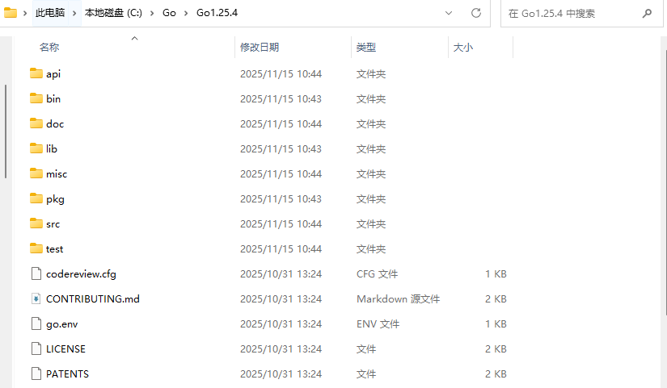
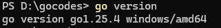
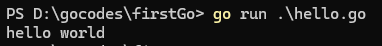
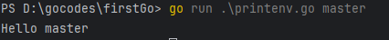

引言
此文档是关于学习Go语言所做的笔记，方便后续复习，温故而知新。
1. Go 语言简介
1.1. 什么是Go
Go是由 Google 主导开发的静态类型、编译型编程语言，于 2009 年开源，设计目标是解决大型软件开发中的效率、复杂度与并发难题，核心哲学是 “简洁、高效、实用”。
-
极简设计：语法精简，移除冗余特性（如继承、复杂泛型早期缺失），用 “组合” 替代 “继承”，代码可读性高，学习成本低（例如强制统一格式的go fmt工具，避免风格争议）。
-
高性能：编译为机器码，执行效率接近 C 语言，远超解释型语言（如 Python）；启动速度极快（毫秒级），内存占用低，适合高性能服务场景。
-
原生并发：通过goroutine（轻量级线程，开销仅为操作系统线程的 1/100~1/10，单机可轻松创建百万级并发）和channel（通信管道）简化并发编程，从语言层面解决多核时代的并发难题。
-
平衡开发效率与可靠性：静态类型确保编译时错误检查（比动态语言更可靠），同时内置垃圾回收（GC）避免手动内存管理（比 C/C++ 更高效），开发效率接近动态语言。
1.2. Go 与 Java Python 的对比及其生态与场景
维度 |
Go |
Java |
Python |
执行方式 |
编译型（直接生成机器码） |
编译型（字节码，依赖 JVM） |
解释型（依赖 Python 解释器） |
启动速度 |
极快（毫秒级，单一二进制文件） |
较慢（JVM 预热耗时，秒级） |
中等（解释器启动快，但执行慢） |
运行时性能 |
接近 C（CPU 密集型表现优异） |
优秀（JIT 优化后接近原生） |
较差（解释执行，比前两者慢 10-100 倍） |
内存占用 |
低（无 JVM overhead） |
中高（JVM 本身占用内存） |
中（解释器 + 动态类型开销） |
领域 |
Go 擅长 |
Java 擅长 |
Python 擅长 |
云原生 / 分布式 |
Docker、K8s、Etcd、微服务 |
分布式框架（Dubbo、Spring Cloud） |
边缘脚本、监控工具 |
企业级应用 |
轻量微服务（如字节跳动推荐系统） |
大型业务系统（银行、电商核心系统） |
内部工具、数据分析后台 |
移动开发 |
跨平台工具（如 Flutter 引擎） |
安卓应用（官方开发语言） |
无（仅辅助脚本） |
数据科学 / AI |
高性能计算引擎（如 TensorFlow 部分模块） |
机器学习框架（如 H2O） |
数据分析（Pandas）、AI（PyTorch/TensorFlow） |
工具开发 |
命令行工具（Terraform、Prometheus） |
企业级工具（Jenkins） |
自动化脚本、爬虫 |
1.3. Go的前世今生
学习一门语言，要了解其前世今生，历史与现状，才能对一门语言有更加深入的理解。了解Go 语言是怎么诞生的，就能清晰知道Go 是为了解决什么问题，了解现状，就能知道语言发展经历到了什么阶段，能解决多大的问题。
Go 语言的创始人有三位，分别是图灵奖获得者、C 语法联合发明人、Unix 之父肯·汤普森（Ken Thompson），Plan 9 操作系统领导者、UTF-8 编码的最初设计者罗伯·派克（Rob Pike），以及 Java 的 HotSpot 虚拟机和 Chrome 浏览器的 JavaScript V8 引擎的设计者之一罗伯特·格瑞史莫（Robert Griesemer）。
Go 诞生于一次研讨，三位大牛交换了关于设计一门新编程语言的想法。
当时，他们在谷歌内部使用的是 C++ 语言来构建各种系统，但 C++ 有着巨大的复杂性、编译构建慢、编写服务端不容易且对并发支持不足。三位大牛都觉得不方便，随即一拍即合，有了设计新语言的想法。新语言需要有简洁、高效、让人使用方便，且满足未来硬件发展趋势和大规模网络服务的程序。由此，Go语言的雏形便出现。随着三人想法的落地，再到社区运营更多人的参与，现在Go语言已经是一门在云原生、网络、企业级应用等方面有着足够竞争力的语言。同时，Go语言也在不断加入新特性，保证语言的活力。
2. Go 环境配置
以下是windows环境安装Go语言。
访问 https://golang.google.cn/ （有可能打不开） 或者 https://go.dev/dl/ 。找到windows的包，下载安装版，在弹出的对话框中选择合适的目录进行安装。
如装在 C:\Go\Go1.25.4 ，其结构是

在终端中输入 go version 得到 go version go1.25.4 windows/amd64 ，便安装成功。

| 安装成功后，要重新启动终端，系统中设置的环境变量才会生效 |
3. helloworld
创建一个文件夹 gocodes 写的代码。进入 gocodes，创建一个fisrtgo的文件夹，用于写第一个Go语言代码，进入firstgo，再创建一个hello.go的文件，用记事本打开，输入
package main
import "fmt"
func main() {
fmt.Println("Hello, World!")
}在终端上运行go run hello.go 得到 Hello, World!

3.1. 基本程序结构
-
package main // 包，表面代码所在的模块（包），通常使用单个的小写字母命名。main包在Go中是一个特殊的包，整个 Go 程序中仅允许存在一个名为 main 的包。
-
import "fmt" // import引入fmt包，fmt 包实现了格式化 IO（输入/输出）的函数。
-
func main() // 程序开始执行的函数，函数内容用大括号包裹。当运行一个可执行的Go程序的时候，所有代码从此此处开始。
-
fmt.Println("Hello, World!") // 使用fmt.Println方法，进行输出。
3.2. 与java的对比
| 对比维度 | Go 语言（基于示例代码） | Java 语言（对应 Hello World 实现） |
|---|---|---|
完整代码示例 |
[source,go] ---- package main import "fmt" func main() { fmt.Println("hello, world") } ---- |
[source,java] ---- public class HelloWorld { public static void main(String[] args) { System.out.println("hello, world"); } } ---- |
包声明规则 |
入口程序必须声明为 |
包声明可选（无包声明则为默认包），公共类名必须与文件名一致（大小写敏感） |
导入语句 |
直接导入依赖包路径（如 |
导入格式为 |
程序入口 |
入口是 |
入口是 公共类 下的 |
输出方式 |
使用标准库 |
使用 |
编译与运行机制 |
1. 编译： |
1. 编译： |
语法简洁性 |
无类、接口等面向对象语法，样板代码极少（仅3行核心逻辑） |
必须用类包裹代码，需显式声明访问修饰符（ |
-
Go 以 简洁、高效、原生编译 为核心，弱化面向对象，更注重工程实用性和并发性能；
-
Java 以 强类型、面向对象、跨平台 为核心，语法严谨，生态成熟，适合需要复杂架构设计的大型应用；
-
从 Hello World 就能看出：Go 追求“少即是多”，Java 追求“规范与扩展性”。
3.3. 加点复杂度
如果想要打印由终端输入的参数该怎么做呢？
在fisrtgo文件下创建一个printenv.go的文件
package main
import (
"fmt"
"os"
)
func main() {
if len(os.Args) > 1 {
fmt.Println("Hello", os.Args[1])
}
}在终端下输入 go run .\printenv.go master

| windows会默认隐藏拓展名，因此我们需要设置显示拓展名，如图所示进行设置 |

4. Go 的基础语法
4.1. 数据类型
| 类型分类 | 具体类型 | 说明 |
|---|---|---|
数值型 |
int（随系统位数）、int8/16/32/64 |
有符号整数（int 在 32 位系统是 32 位，64 位系统是 64 位） |
uint（无符号）、uint8（byte） |
无符号整数（byte 是 uint8 的别名） |
|
float32、float64 |
浮点数（默认用 float64，精度更高），float32的精度约6-7位，float64的精度约 15-17 位 |
|
complex64、complex128 |
复数（实部+虚部，如 |
|
布尔型 |
bool |
取值 true/false（不能用 0/1 替代） |
字符串 |
string |
不可变字符序列（UTF-8 编码） |
字符型 |
rune |
Unicode 码点（int32 的别名，用于处理中文等多字节字符） |
package main
import "fmt"
func main() {
var a int = 10 // 通用整数（随系统）
var b uint8 = 255 // 无符号8位，最大值255（赋值256会编译错误）
var c int64 = 9223372036854775807 // int64最大值
fmt.Println("int:", a, "uint8:", b, "int64:", c) // 输出：int: 10 uint8: 255 int64: 9223372036854775807
var f1 float32 = 3.1415926 // 32位浮点，精度有限
f2 := 2.718281828459045 // 短变量声明，默认float64
fmt.Println("float32:", f1, "float64:", f2) // 输出：float32: 3.1415925 float64: 2.718281828459045
// 注意：浮点数精度问题
fmt.Println("0.1 + 0.2 =", 0.1+0.2) // 输出：0.1 + 0.2 = 0.30000000000000004（非0.3）
var c1 complex64 = 3 + 4i // 32位复数（实部3，虚部4）
c2 := 5 + 6i // 短变量声明，默认complex128
fmt.Println("complex64:", c1) // 输出：complex64: (3+4i)
fmt.Println("实部:", real(c2), "虚部:", imag(c2)) // 输出：实部: 5 虚部: 6
var b1 bool = true // 显式声明
b2 := false // 短变量声明
b3 := b1 && b2 // 逻辑与（都真才真）→ false
b4 := b1 || b2 // 逻辑或（任一真则真）→ true
b5 := !b1 // 逻辑非（取反）→ false
fmt.Println("b1:", b1, "b2:", b2) // 输出：b1: true b2: false
fmt.Println("b3 (&&):", b3, "b4 (||):", b4, "b5 (!):", b5) // 输出：b3 (&&): false b4 (||): true b5 (!): false
// 条件判断（常用场景）
if b1 {
fmt.Println("b1 is true")
} else {
fmt.Println("b1 is false")
}
var s1 string = "Hello, Go!" // 双引号定义
s2 := "Hello\nWorld" // 支持转义（\n换行）
s3 := `line1
line2
line3` // 反引号多行字符串（不转义）
s4 := s1 + " " + s2 // 字符串拼接（+号）
fmt.Println("s1:", s1) // 输出：s1: Hello, Go!
fmt.Println("s2:", s2) // 输出：s2: Hello
// World
fmt.Println("s3:", s3) // 输出：s3: line1
// line2
// line3
fmt.Println("拼接后s4:", s4) // 输出：拼接后s4: Hello, Go! Hello
// World
fmt.Println("s1长度（字节数）:", len(s1)) // 输出：10（每个ASCII字符占1字节）
fmt.Println("\"Go语言\"长度:", len("Go语言")) // 输出：8（Go占2字节，中文"语""言"各占3字节）
}4.2. 变量
Go 语言变量名由字母、数字、下划线组成，其中首个字符不能为数字。
声明变量的一般形式是使用 var 关键字：var param type，也可以一次声明多个变量：var param1，param2 type
package main
import "fmt"
func main() {
var a string = "hello"
fmt.Println(a)
var b, c int = 1, 2
fmt.Println(b, c)
}如果没有显示的为变量赋值，Go 编译器会为变量赋予这个类型的零值： var a int // a的初值为int类型的零值：0
| 内置原生类型 | 默认值（零值） |
|---|---|
所有整数类型 |
0 |
浮点类型 |
0.0 |
布尔类型 |
false |
字符串类型 |
"" |
指针、接口、切片、channel、map和函数类型 |
nil |
变量声明块（block）的语法形式：
var (
a int = 128
b int8 = 6
s string = "hello"
c rune = 'A'
t bool = true
)
var (
a, b, c int = 5, 6, 7
c, d, e rune = 'C', 'D', 'E'
)两种变量声明语法糖：
-
省略类型信息的声明：
-
var a, b, c = 12, 'A', "hello"
-
-
短变量声明：
a := 12
b := 'A'
c := "hello"
a, b, c := 12, 'A', "hello"4.3. 常量
常量中的数据类型只可以是布尔型、数字型（整数型、浮点型和复数）和字符串型。在程序运行时，不会被修改的量。其定义格式为：const identifier [type] = value。
package main
import "fmt"
func main() {
const LENGTH int = 20
const WIDTH int = 15
var area int
const a, b, c = 1, false, "str"
area = LENGTH * WIDTH
fmt.Println("面积为 : ", area)
fmt.Println(a, b, c)
}4.4. 关键字
| 功能分类 | 关键字 | 核心说明 | 典型场景示例 |
|---|---|---|---|
包与导入相关 |
|
定义当前文件所属包，程序入口必须为 |
|
|
导入外部包（系统包/自定义包），支持别名、多行导入 |
|
|
声明与定义相关 |
|
声明变量（全局/局部），支持类型推导、批量声明 |
|
|
声明常量（编译期确定，不可修改），支持 |
|
|
|
定义自定义类型（别名、结构体、接口等） |
|
|
|
声明函数或方法（绑定到类型的函数），支持多返回值、可变参数 |
|
|
控制流语句 |
|
条件判断，支持在 |
|
|
|
|
|
|
多分支选择，默认自动 break，支持任意类型匹配 |
|
|
|
|
|
|
|
强制 |
|
|
|
退出当前循环或 |
|
|
|
跳过当前循环迭代，进入下一次 |
|
|
|
退出函数，返回指定结果（支持裸返回） |
|
|
|
跳转到函数内的标签（不推荐滥用） |
|
|
数据结构与接口 |
|
定义结构体（值类型，包含多个不同类型字段） |
|
|
定义接口（仅声明方法集合，隐式实现），支持多态 |
|
|
|
定义键值对映射（引用类型，键必须可比较） |
|
|
并发编程 |
|
启动 goroutine（轻量级线程），异步执行函数 |
|
|
定义通道（goroutine 间通信机制），支持有缓冲/无缓冲 |
|
|
|
监听多个通道的发送/接收操作，随机选择就绪分支 |
|
|
其他核心 |
|
延迟执行函数（函数退出前执行，先进后出），用于资源释放 |
|
|
空值标识符（适用于指针/通道/map/切片/接口/函数，非关键字） |
|
4.5. 注释
Go 仅支持 单行注释 和 块注释 两种，语法简洁且无歧义，不支持嵌套注释。
-
// 注释内容（从 // 开始到行尾，均为注释）
-
块注释（/* */）
// 注释单行内容 /* 注释内容 可以换行 */
5. 运算符
5.1. 算术运算符
package main
import "fmt"
func main() {
// 基础算术运算
a, b := 10, 3
fmt.Println("a + b =", a+b) // 13
fmt.Println("a - b =", a-b) // 7
fmt.Println("a * b =", a*b) // 30
fmt.Println("a / b =", a/b) // 3（整数除法舍弃小数）
fmt.Println("a % b =", a%b) // 1（余数）
fmt.Println("-a % b =", -a%b) // -1（符号与被除数一致）
// 浮点数运算
f1, f2 := 10.0, 3.0
fmt.Println("f1 / f2 =", f1/f2) // 3.3333333333333335
// 字符串拼接（仅 + 支持）
s1, s2 := "Go", "Lang"
fmt.Println("s1 + s2 =", s1+s2) // GoLang
// 自增自减（只能独立语句，不能赋值）
i, j := 5, 5
i++ // 正确：i = 6
j-- // 正确：j = 4
// fmt.Println(i++) // 错误：不能作为表达式使用
// k := i++ // 错误：不能赋值
fmt.Println("i =", i, "j =", j) // 6 4
}5.2. 赋值运算符
package main
import "fmt"
func main() {
// 基础赋值
var x int = 10
x = 20
fmt.Println("x =", x) // 20
// 复合赋值
y := 10
y += 5 // y = 10 + 5 = 15
y *= 2 // y = 15 * 2 = 30
y %= 7 // y = 30 % 7 = 2
fmt.Println("y =", y) // 2
// 位运算复合赋值
z := 0b1010 // 10（二进制）
z <<= 2 // 左移2位 → 0b101000 = 40
fmt.Printf("z <<= 2 → %d（二进制：%b）\n", z, z) // 40（101000）
}5.3. 比较运算符
package main
import "fmt"
func main() {
// 数值比较
m, n := 10, 20
fmt.Println("m == n?", m == n) // false
fmt.Println("m < n?", m < n) // true
fmt.Println("m >= n?", m >= n) // false
// 字符串比较（按Unicode码点顺序）
s1, s2 := "apple", "banana"
s3 := "apple"
fmt.Println("s1 == s3?", s1 == s3) // true
fmt.Println("s1 < s2?", s1 < s2) // true（'a' 的码点 < 'b'）
// 布尔值比较
b1, b2 := true, false
fmt.Println("b1 != b2?", b1 != b2) // true
// 指针比较（指向同一变量则相等）
p1 := &m
p2 := &m
p3 := &n
fmt.Println("p1 == p2?", p1 == p2) // true
fmt.Println("p1 == p3?", p1 == p3) // false
// 错误示例：不同类型不能直接比较
// var num int = 10
// var f float64 = 10.0
// fmt.Println(num == f) // 编译错误：int 和 float64 不兼容
}5.4. 逻辑运算符
package main
import "fmt"
func main() {
// 基础逻辑运算
a, b := true, false
fmt.Println("a && b =", a && b) // false（且：都为true才true）
fmt.Println("a || b =", a || b) // true（或：任一为true则true）
fmt.Println("!a =", !a) // false（非：取反）
// 短路特性演示
x, y := 10, 20
// 逻辑与短路：左为false，右表达式（y++）不执行
if x > 100 && autoincrement(y) > 0 {
fmt.Println("逻辑与执行")
}
fmt.Println("y =", y) // 20（y++未执行）
// 逻辑或短路：左为true，右表达式（x++）不执行
if x < 20 || autoincrement(x) > 0 {
fmt.Println("逻辑或执行")
}
fmt.Println("x =", x) // 10（x++未执行）
}
func autoincrement(val int) int {
return val + 1
}5.5. 位运算符
package main
import "fmt"
func main() {
// 定义8位无符号整数（便于观察二进制）
var a uint8 = 0b1010 // 10（十进制）
var b uint8 = 0b0110 // 6（十进制）
// 按位与（&）：仅对应位都为1时为1
fmt.Printf("a & b = %d（二进制：%08b）\n", a&b, a&b) // 2（00000010）
// 按位或（|）：对应位任一为1时为1
fmt.Printf("a | b = %d（二进制：%08b）\n", a|b, a|b) // 14（00001110）
// 按位异或（^）：对应位不同时为1
fmt.Printf("a ^ b = %d（二进制：%08b）\n", a^b, a^b) // 12（00001100）
// 按位取反（^单目）：0→1，1→0（uint8 0b1010 → 0b11110101）
fmt.Printf("^a = %d（二进制：%08b）\n", ^a, ^a) // 245（11110101）
// 左移（<<）：左移2位 → 0b101000 = 40
fmt.Printf("a << 2 = %d（二进制：%08b）\n", a<<2, a<<2) // 40（00101000）
// 右移（>>）：右移1位 → 0b0101 = 5
fmt.Printf("a >> 1 = %d（二进制：%08b）\n", a>>1, a>>1) // 5（00000101）
// 有符号右移（补符号位）
var c int8 = -10 // 二进制：11110110（补码）
fmt.Printf("c >> 1 = %d（二进制：%08b）\n", c>>1, c>>1) // -5（11111011）
}5.6. 其他常用运算符
package main
import "fmt"
func main() {
// 遍历切片
slice := []string{"a", "b", "c"}
for idx, val := range slice {
fmt.Printf("切片索引：%d，值：%s\n", idx, val) // 0:a, 1:b, 2:c
}
// 遍历字符串（返回字节索引和Unicode码点）
str := "Go语言"
for idx, char := range str {
fmt.Printf("字符串索引：%d，字符：%c（Unicode：%d）\n", idx, char, char)
// 0:G(71), 1:o(111), 2:语(35821), 5:言(35328)（中文字符占3字节）
}
// 遍历map（返回键和值，无序）
m := map[string]int{"a": 1, "b": 2}
for key, val := range m {
fmt.Printf("map键：%s，值：%d\n", key, val) // a:1, b:2（顺序不固定）
}
}6. Go 流程控制
6.1. if-else 条件语句
package main
import "fmt"
func main() {
// 示例1：基础if-else
score := 85
if score >= 90 {
fmt.Println("优秀")
} else if score >= 70 {
fmt.Println("良好")
} else {
fmt.Println("及格/不及格")
}
// 示例2：if初始化语句（推荐用法）
if age := 22; age >= 18 { // age仅在if-else内有效
fmt.Println("成年")
} else {
fmt.Println("未成年")
}
}6.2. for 循环
Go 没有while、do-while，所有循环都用for实现，语法灵活，覆盖三种常见场景。
package main
import "fmt"
func main() {
// 1. 基本的 for 循环 (类似 C/Java)
sum := 0
for i := 0; i < 10; i++ {
sum += i
}
fmt.Println("0到9的和是:", sum)
// 2. 省略初始化和后置语句 (类似 while)
n := 1
for n < 100 {
n *= 2
}
fmt.Println("大于100的最小2的幂是:", n)
// 2. 无限循环 (需要 break 或 return 退出)
// for {
// fmt.Println("这是一个无限循环，请手动停止程序")
// }
// 3. for range 遍历 (非常常用)
s := "Go语言"
for index, char := range s {
// 注意 index 是字节位置，char 是 rune 类型
fmt.Printf("在字节位置 %d 的字符是 %c\n", index, char)
}
}6.3. switch 分支语句
Go 的 switch 非常灵活，它自动为每个 case 添加 break，匹配逻辑也更强大。
package main
import (
"fmt"
"runtime"
"time"
)
func main() {
// 1. 基本的 switch
fmt.Print("Go 运行在 ")
switch os := runtime.GOOS; os {
case "darwin":
fmt.Println("OS X.")
case "linux":
fmt.Println("Linux.")
default:
// os 在这里仍然可见
fmt.Printf("%s.\n", os)
}
// 2. 无表达式的 switch (相当于 if-else)
t := time.Now()
switch {
case t.Hour() < 12:
fmt.Println("上午好!")
case t.Hour() < 17:
fmt.Println("下午好!")
default:
fmt.Println("晚上好!")
}
// 3. case 可以有多个值
day := "saturday"
switch day {
case "saturday", "sunday":
fmt.Println("是周末！")
default:
fmt.Println("是工作日。")
}
// 4：fallthrough（穿透）
num := 2
switch num {
case 2:
fmt.Println("匹配2")
fallthrough // 强制穿透到下一个case
case 3:
fmt.Println("穿透到3") // 会执行
default:
fmt.Println("默认")
}
}7. 复合数据类型
7.1. 数组 (Array)
数组是具有固定长度且包含相同类型元素的序列。
package main
import "fmt"
func main() {
//定义方式
// 1. 声明并初始化（指定长度）
var arr1 [3]int = [3]int{1, 2, 3}
// 2. 短变量声明（自动推导类型）
arr2 := [3]int{4, 5, 6}
// 3. 自动推断长度（... 表示由初始化值决定）
arr3 := [...]int{7, 8, 9}
// 4. 部分初始化（未指定的元素为类型零值）
arr4 := [5]string{"a", "b", 3: "d"} // 索引 0:a,1:b,2:"",3:d,4:""
//在Go语言中，声明了一个变量或参数没有使用，编译器会报错。
fmt.Println(arr1, arr2, arr3, arr4)
//基本操作
arr := [3]int{10, 20, 30}
// 1. 索引访问（0 开始）
fmt.Println(arr[0]) // 输出 10
arr[1] = 200 // 修改元素
// 2. 遍历（for 循环）
for i := 0; i < len(arr); i++ {
fmt.Printf("索引 %d: %d\n", i, arr[i])
}
// 3. 遍历（for range，推荐）
for idx, val := range arr {
fmt.Printf("idx: %d, val: %d\n", idx, val)
}
}7.2. 切片 (Slice)
-
动态长度的 “动态数组”，基于数组实现（底层引用一个数组）
-
引用类型（赋值 / 传参时仅拷贝引用，修改会影响原切片）
-
由 len（当前元素个数）和 cap（底层数组容量）描述
-
支持 append 扩容、切片截取（slice[low:high]）
package main
import "fmt"
func main() {
// 1. 声明切片（三种方式）
var s1 []int // 空切片（len=0, cap=0）
s2 := []string{"a", "b", "c"} // 直接初始化
s3 := make([]float64, 3, 5) // make(类型, 长度, 容量)，未初始化元素为零值
fmt.Println("s1:", s1, "len:", len(s1), "cap:", cap(s1)) // s1: [] len: 0 cap: 0
fmt.Println("s2:", s2, "len:", len(s2), "cap:", cap(s2)) // s2: [a b c] len: 3 cap: 3
fmt.Println("s3:", s3, "len:", len(s3), "cap:", cap(s3)) // s3: [0 0 0] len: 3 cap: 5
// 2. 切片截取（左闭右开，不修改原切片，共享底层数组）
s4 := s2[1:3] // 从 s2 截取索引 1~2（不含3）
fmt.Println("s4:", s4) // 输出：s4: [b c]
s4[0] = "x" // 修改截取切片，原切片也会变（共享底层数组）
fmt.Println("修改后 s2:", s2) // 输出：修改后 s2: [a x c]
// 3. append 扩容（容量不足时自动扩容，生成新底层数组）
s5 := []int{1, 2}
fmt.Println("s5 初始:", s5, "len:", len(s5), "cap:", cap(s5)) // [1 2] len:2 cap:2
s5 = append(s5, 3, 4, 5) // 追加元素，容量不足时扩容（通常翻倍）
fmt.Println("s5 追加后:", s5, "len:", len(s5), "cap:", cap(s5)) // [1 2 3 4 5] len:5 cap:6
// 4. 切片拷贝（copy(dst, src)，仅拷贝元素，不共享底层数组）
src := []int{10, 20, 30}
dst := make([]int, len(src))
copy(dst, src)
dst[0] = 999
fmt.Println("原 src:", src) // 输出：原 src: [10 20 30]
fmt.Println("拷贝后 dst:", dst) // 输出：拷贝后 dst: [999 20 30]
}7.3. Map
-
Map 是一个无序的键值对集合，也称为哈希表或字典。
-
引用类型，必须通过 make 初始化（或直接字面量初始化）
-
key 必须是可比较类型（如 int、string、bool，不能是切片、map、函数）
-
支持增删改查，通过 for range 遍历（无序）
package main
import "fmt"
func main() {
// 1. 初始化 map（两种方式）
m1 := make(map[string]int) // 空 map
m2 := map[string]string{
"name": "张三",
"age": "25",
"city": "北京",
}
// 2. 新增/修改元素（key 存在则修改，不存在则新增）
m1["math"] = 90
m1["english"] = 85
m2["age"] = "26" // 修改已有 key
fmt.Println("m1:", m1) // 输出：m1: map[english:85 math:90]
fmt.Println("m2:", m2) // 输出：m2: map[age:26 city:北京 name:张三]
// 3. 查询元素（第二个返回值表示 key 是否存在）
score, ok := m1["math"]
if ok {
fmt.Println("math 成绩:", score) // 输出：math 成绩: 90
} else {
fmt.Println("math 成绩不存在")
}
// 4. 删除元素（delete(map, key)，key 不存在则无操作）
delete(m2, "city")
fmt.Println("m2 删除 city 后:", m2) // 输出：m2 删除 city 后: map[age:26 name:张三]
// 5. 遍历 map（无序，每次遍历顺序可能不同）
fmt.Println("遍历 m1:")
for k, v := range m1 {
fmt.Printf("key: %s, value: %d\n", k, v)
}
// 6. map 是引用类型（拷贝后修改会影响原 map）
m3 := m1
m3["english"] = 95
fmt.Println("原 m1:", m1) // 输出：原 m1: map[english:95 math:90]
fmt.Println("拷贝后 m3:", m3) // 输出：拷贝后 m3: map[english:95 math:90]
}7.4. 结构体 (Struct)
-
自定义复合类型，可包含多个不同类型的字段（类似其他语言的 “类”）
-
值类型（默认），支持定义方法（绑定到结构体的函数）
-
用于封装数据，实现面向对象的核心特性（如封装、组合）
package main
import "fmt"
// 1. 定义结构体（首字母大写表示可导出，供其他包使用，字段首字母大写表示可导出，供其他包使用，字段首字母小写表示包内私有，不导出）
type Person struct {
Name string
Age int
Addr string
}
// 2. 定义结构体方法（值接收者：修改不会影响原结构体）
func (p Person) SayHello() {
fmt.Printf("大家好，我是 %s，今年 %d 岁\n", p.Name, p.Age)
}
// 3. 指针接收者：修改会影响原结构体（推荐用于大结构体，避免拷贝）
func (p *Person) GrowUp() {
p.Age++ // 等价于 (*p).Age++
}
func main() {
// 4. 创建结构体实例（三种方式）
p1 := Person{"张三", 25, "北京"} // 按字段顺序初始化
p2 := Person{Name: "李四", Age: 30} // 指定字段初始化（未指定字段为零值）
p3 := new(Person) // new 返回指针 (*Person)
p3.Name = "王五"
p3.Age = 28
fmt.Println("p1:", p1) // 输出：p1: {张三 25 北京}
fmt.Println("p2:", p2) // 输出：p2: {李四 30 }（Addr 为零值 ""）
fmt.Println("p3:", p3) // 输出：p3: &{王五 28 }（指针类型）
// 5. 访问字段（指针结构体可直接通过 . 访问，无需解引用）
fmt.Println("p3 姓名:", p3.Name) // 输出：p3 姓名: 王五
// 6. 调用方法（值接收者和指针接收者均可直接调用，Go 自动转换）
p1.SayHello() // 输出：大家好，我是 张三，今年 25 岁
p3.GrowUp() // 调用指针方法，修改原结构体年龄
p3.SayHello() // 输出：大家好，我是 王五，今年 29 岁
// 7. 结构体嵌套（实现“组合”，类似继承）
type Student struct {
Person // 嵌套结构体（匿名字段，继承 Person 的字段和方法）
Score int
}
stu := Student{Person: Person{Name: "赵六", Age: 20}, Score: 95}
fmt.Println("学生姓名:", stu.Name) // 直接访问嵌套字段
stu.SayHello() // 调用嵌套结构体的方法
}8. Go 函数
在Go中，函数是“一等公民”，意味着它们可以像任何其他值一样被传递、赋值。
package main
import (
"errors"
"fmt"
"strings"
)
// 1. 基本函数：无参数、无返回值
func sayHello() {
fmt.Println("=== 1. 基本函数 ===")
fmt.Println("Hello, Go Functions!")
}
// 2. 带参数的函数：普通参数（值传递）
func add(a int, b int) int {
// 同名参数可简写为 a, b int
return a + b
}
// 3. 可变参数函数：参数数量不固定（本质是切片）
func sum(nums ...int) int {
fmt.Println("=== 3. 可变参数函数 ===")
total := 0
for _, num := range nums {
total += num
}
return total
}
// 4. 多返回值函数：Go 语言特色，可返回多个结果
func divide(a, b float64) (float64, error) {
fmt.Println("=== 4. 多返回值函数 ===")
if b == 0 {
// 返回错误信息
return 0, errors.New("除数不能为 0")
}
return a / b, nil // 正常返回结果和 nil 错误
}
// 5. 命名返回值函数：提前声明返回值变量，return 可省略参数
func calculate(a, b int) (sum int, product int) {
fmt.Println("=== 5. 命名返回值函数 ===")
sum = a + b // 直接给返回值变量赋值
product = a * b
return // 裸返回，自动返回 sum 和 product
}
// 6. 函数作为参数（高阶函数）
func processNumbers(nums []int, f func(int) int) []int {
fmt.Println("=== 6. 函数作为参数 ===")
result := make([]int, len(nums))
for i, num := range nums {
result[i] = f(num) // 调用传入的函数
}
return result
}
// 7. 匿名函数：无函数名，直接定义并使用
func anonymousFuncDemo() {
fmt.Println("=== 7. 匿名函数 ===")
// 直接定义并调用
func(msg string) {
fmt.Println("匿名函数执行：", msg)
}("Hello Anonymous!")
// 赋值给变量后调用
addFunc := func(a, b int) int {
return a + b
}
fmt.Println("匿名函数变量调用：", addFunc(3, 4))
}
// 8. 闭包：函数嵌套，内部函数引用外部变量（延长外部变量生命周期）
func counter() func() int {
fmt.Println("=== 8. 闭包 ===")
count := 0 // 外部变量，被内部函数引用
// 返回内部函数（闭包）
return func() int {
count++
return count
}
}
// 9. 递归函数：函数调用自身
func factorial(n int) int {
fmt.Println("=== 9. 递归函数 ===")
if n == 0 || n == 1 {
return 1
}
return n * factorial(n-1) // 递归调用
}
// 10. defer 延迟执行：函数退出前执行（常用于资源释放）
func deferDemo() {
fmt.Println("=== 10. defer 延迟执行 ===")
defer fmt.Println("defer 1：最后执行") // 延迟到函数结束前
defer fmt.Println("defer 2：倒数第二执行")
fmt.Println("函数主体执行")
}
func main() {
// 1. 基本函数调用
sayHello()
fmt.Println()
// 2. 带参数函数调用
fmt.Println("2. 3 + 5 =", add(3, 5))
fmt.Println()
// 3. 可变参数函数调用（可传任意个int参数）
fmt.Println("3. 1+2+3+4 =", sum(1, 2, 3, 4))
fmt.Println("3. 5+6 =", sum(5, 6))
nums := []int{7, 8, 9}
fmt.Println("3. 7+8+9 =", sum(nums...)) // 切片转可变参数
fmt.Println()
// 4. 多返回值函数调用（需要接收错误返回）
result, err := divide(10, 2)
if err != nil {
fmt.Println("4. 错误：", err)
} else {
fmt.Println("4. 10 / 2 =", result)
}
// 测试错误场景
_, err2 := divide(5, 0)
if err2 != nil {
fmt.Println("4. 错误场景：", err2)
}
fmt.Println()
// 5. 命名返回值函数调用
sumVal, productVal := calculate(4, 5)
fmt.Println("5. 4+5 =", sumVal, "，4*5 =", productVal)
fmt.Println()
// 6. 高阶函数调用（传入自定义函数）
numbers := []int{1, 2, 3, 4}
// 传入匿名函数作为参数（求平方）
squares := processNumbers(numbers, func(x int) int {
return x * x
})
fmt.Println("6. 数组元素平方：", squares)
// 传入匿名函数（求翻倍）
doubles := processNumbers(numbers, func(x int) int {
return x * 2
})
fmt.Println("6. 数组元素翻倍：", doubles)
fmt.Println()
// 7. 匿名函数演示
anonymousFuncDemo()
fmt.Println()
// 8. 闭包演示（多次调用共享外部变量）
c1 := counter()
fmt.Println("8. 计数器1第一次：", c1())
fmt.Println("8. 计数器1第二次：", c1())
c2 := counter() // 新的闭包，独立变量
fmt.Println("8. 计数器2第一次：", c2())
fmt.Println()
// 9. 递归函数演示（求阶乘）
fmt.Println("9. 5的阶乘 =", factorial(5))
fmt.Println()
// 10. defer 演示
deferDemo()
}9. 指针
指针保存了值的内存地址。使用指针，我们可以在函数内直接修改调用者作用域中的变量，避免在函数调用时进行大数据块的复制。
-
&操作符会生成一个指向其操作数的指针。 -
*操作符表示指针指向的底层值。
package main
import "fmt"
// 1. 基础指针：定义、取地址（&）、取值（*）
func basicPointer() {
fmt.Println("=== 1. 基础指针操作 ===") // 输出：=== 1. 基础指针操作 ===
// 普通变量
a := 10
// 输出示例：变量 a：值=10，地址=&0xc0000a6058（地址每次运行可能不同）
fmt.Printf("变量 a：值=%d，地址=&%p\n", a, &a)
// 声明指针变量（*int 表示 int 类型的指针）
var p *int
fmt.Printf("未赋值的指针 p：值=%v（nil）\n", p) // 输出：未赋值的指针 p：值=<nil>（nil）
// 取变量 a 的地址，赋值给指针 p
p = &a
// 输出示例：指针 p：值=&0xc0000a6058（指向 a 的地址）
fmt.Printf("指针 p：值=&%p（指向 a 的地址）\n", p)
// 通过指针取值（*p 表示获取指针指向的变量的值）
fmt.Printf("通过 *p 取值：%d（与 a 的值相同）\n", *p) // 输出：通过 *p 取值：10（与 a 的值相同）
// 通过指针修改原变量的值
*p = 20
fmt.Printf("修改后：*p=%d，a=%d（原变量被修改）\n", *p, a) // 输出：修改后：*p=20，a=20（原变量被修改）
fmt.Println() // 输出：空行
}
// 2. 指针作为函数参数（实现“引用传递”，修改外部变量）
func modifyByPointer(x *int) {
// x 是指针参数，接收外部变量的地址
*x = *x * 2 // 通过指针修改外部变量的值
}
// 对比：值传递（无法修改外部变量）
func modifyByValue(x int) {
x = x * 2 // 仅修改函数内部的副本
}
func pointerAsParam() {
fmt.Println("=== 2. 指针作为函数参数 ===") // 输出：=== 2. 指针作为函数参数 ===
b := 5
fmt.Printf("修改前 b：%d\n", b) // 输出：修改前 b：5
// 值传递：函数内部修改不影响外部
modifyByValue(b)
fmt.Printf("值传递后 b：%d（无变化）\n", b) // 输出：值传递后 b：5（无变化）
// 指针传递：传递变量地址，函数内部可修改外部变量
modifyByPointer(&b)
fmt.Printf("指针传递后 b：%d（被修改）\n", b) // 输出：指针传递后 b：10（被修改）
fmt.Println() // 输出：空行
}
// 3. 指针作为返回值（返回变量的地址）
// 注意：不能返回局部变量的指针（局部变量出栈后内存回收），这里返回全局变量/堆分配变量的指针
var globalVar = 100 // 全局变量（在全局区，不会随函数退出回收）
func getPointer() *int {
// 返回全局变量的指针（安全）
return &globalVar
}
// 或返回堆上分配的变量（通过 new 关键字，手动分配堆内存）
func newPointer() *int {
// new(T) 分配 T 类型的内存，返回 *T 指针（堆内存，生命周期由 GC 管理）
p := new(int)
*p = 300
return p
}
func pointerAsReturn() {
fmt.Println("=== 3. 指针作为返回值 ===") // 输出：=== 3. 指针作为返回值 ===
// 接收全局变量的指针
p1 := getPointer()
fmt.Printf("p1 指向全局变量：*p1=%d\n", *p1) // 输出：p1 指向全局变量：*p1=100
// 接收堆上变量的指针
p2 := newPointer()
fmt.Printf("p2 指向堆变量：*p2=%d\n", *p2) // 输出：p2 指向堆变量：*p2=300
// 修改返回的指针指向的值
*p1 = 200
*p2 = 400
fmt.Printf("修改后：*p1=%d，globalVar=%d\n", *p1, globalVar) // 输出：修改后：*p1=200，globalVar=200
fmt.Printf("修改后：*p2=%d\n", *p2) // 输出：修改后：*p2=400
fmt.Println() // 输出：空行
}
// 4. 结构体指针（常用场景：高效操作结构体，避免拷贝）
type Person struct {
Name string
Age int
}
func structPointer() {
fmt.Println("=== 4. 结构体指针 ===") // 输出：=== 4. 结构体指针 ===
// 方式1：先定义结构体变量，再取地址
person1 := Person{Name: "张三", Age: 25}
p1 := &person1 // 结构体指针
// 通过结构体指针访问字段（Go 语法糖：p1.Name 等价于 (*p1).Name）
// 输出：p1 指向的结构体：Name=张三，Age=25
fmt.Printf("p1 指向的结构体：Name=%s，Age=%d\n", p1.Name, (*p1).Age)
// 通过结构体指针修改字段
p1.Age = 26
// 输出：修改后 person1：Name=张三，Age=26
fmt.Printf("修改后 person1：Name=%s，Age=%d\n", person1.Name, person1.Age)
// 方式2：直接创建结构体指针（使用 new）
p2 := new(Person)
p2.Name = "李四" // 自动解引用，无需 (*p2).Name
p2.Age = 30
// 输出：p2 指向的结构体：Name=李四，Age=30
fmt.Printf("p2 指向的结构体：Name=%s，Age=%d\n", p2.Name, p2.Age)
// 方式3：结构体字面量 + 取地址
p3 := &Person{Name: "王五", Age: 35}
// 输出：p3 指向的结构体：Name=王五，Age=35
fmt.Printf("p3 指向的结构体：Name=%s，Age=%d\n", p3.Name, p3.Age)
fmt.Println() // 输出：空行
}
// 5. 指针数组（数组元素是指针）
func pointerArray() {
fmt.Println("=== 5. 指针数组 ===") // 输出：=== 5. 指针数组 ===
// 普通数组（元素是值）
arr1 := [3]int{1, 2, 3}
fmt.Printf("普通数组 arr1：%v\n", arr1) // 输出：普通数组 arr1：[1 2 3]
// 指针数组（元素是 *int 类型的指针）
var arr2 [3]*int
arr2[0] = &arr1[0] // 元素存储 arr1[0] 的地址
arr2[1] = &arr1[1]
arr2[2] = &arr1[2]
// 输出示例：指针数组 arr2：[&0xc0000a60a8, &0xc0000a60b0, &0xc0000a60b8]
fmt.Printf("指针数组 arr2：[&%p, &%p, &%p]\n", arr2[0], arr2[1], arr2[2])
fmt.Printf("通过指针数组取值：[%d, %d, %d]\n", *arr2[0], *arr2[1], *arr2[2]) // 输出：通过指针数组取值：[1 2 3]
// 通过指针数组修改原数组的值
*arr2[0] = 10
*arr2[1] = 20
*arr2[2] = 30
fmt.Printf("修改后 arr1：%v（原数组被修改）\n", arr1) // 输出：修改后 arr1：[10 20 30]（原数组被修改）
fmt.Println() // 输出：空行
}
// 6. 数组指针（指向数组的指针）
func arrayPointer() {
fmt.Println("=== 6. 数组指针 ===") // 输出：=== 6. 数组指针 ===
arr := [3]int{10, 20, 30}
// 声明数组指针（*[3]int 表示指向长度为 3 的 int 数组的指针）
var p *[3]int = &arr
// 输出示例：数组 arr：[10 20 30]，地址=&0xc0000a60c0
fmt.Printf("数组 arr：%v，地址=&%p\n", arr, &arr)
// 输出示例：数组指针 p：值=&0xc0000a60c0（指向 arr 的地址）
fmt.Printf("数组指针 p：值=&%p（指向 arr 的地址）\n", p)
// 通过数组指针访问元素（两种方式）
fmt.Printf("p[0] = %d，(*p)[0] = %d\n", p[0], (*p)[0]) // 输出：p[0] = 10，(*p)[0] = 10
// 通过数组指针修改数组元素
p[1] = 200
fmt.Printf("修改后 arr：%v\n", arr) // 输出：修改后 arr：[10 200 30]
// 数组指针遍历
fmt.Print("遍历数组指针 p：") // 输出：遍历数组指针 p：
for i := 0; i < len(p); i++ {
fmt.Printf("%d ", p[i]) // 输出：10 200 30
}
fmt.Println("\n") // 输出：换行 + 空行
}
// 7. 多级指针（指针的指针，较少用但需了解）
func multiLevelPointer() {
fmt.Println("=== 7. 多级指针 ===") // 输出：=== 7. 多级指针 ===
c := 100
p1 := &c // p1 是 *int（一级指针）
p2 := &p1 // p2 是 **int（二级指针，指向一级指针 p1）
p3 := &p2 // p3 是 ***int（三级指针，指向二级指针 p2）
// 输出示例：c：值=100，地址=&0xc0000a6108
fmt.Printf("c：值=%d，地址=&%p\n", c, &c)
// 输出示例：p1（*int）：值=&0xc0000a6108，地址=&0xc0000c4018
fmt.Printf("p1（*int）：值=&%p，地址=&%p\n", p1, &p1)
// 输出示例：p2（**int）：值=&0xc0000c4018，地址=&0xc0000c4020
fmt.Printf("p2（**int）：值=&%p，地址=&%p\n", p2, &p2)
// 输出示例：p3（***int）：值=&0xc0000c4020
fmt.Printf("p3（***int）：值=&%p\n", p3)
// 多级指针取值（逐层解引用）
fmt.Printf("*p1 = %d（一级解引用，取 c 的值）\n", *p1) // 输出：*p1 = 100（一级解引用，取 c 的值）
fmt.Printf("**p2 = %d（二级解引用）\n", **p2) // 输出：**p2 = 100（二级解引用）
fmt.Printf("***p3 = %d（三级解引用）\n", ***p3) // 输出：***p3 = 100（三级解引用）
// 通过多级指针修改原变量
***p3 = 200
fmt.Printf("修改后 c = %d\n", c) // 输出：修改后 c = 200
fmt.Println() // 输出：空行
}
func main() {
// 按顺序执行所有指针示例
basicPointer() // 基础操作
pointerAsParam() // 指针作为参数
pointerAsReturn() // 指针作为返回值
structPointer() // 结构体指针
pointerArray() // 指针数组
arrayPointer() // 数组指针
multiLevelPointer() // 多级指针
}10. 方法与接口
10.1. 方法 (Method)
方法是带有特殊“接收者”参数的函数。接收者可以是值类型或指针类型。方法提供了一种类似面向对象编程中“类”的行为。
package main
import "fmt"
// 1. 定义结构体（方法最常用的绑定类型）
type Rectangle struct {
Width float64
Height float64
}
// 2. 结构体 + 值接收者方法（不能修改原结构体的值）
// 计算面积：值接收者接收的是结构体副本
func (r Rectangle) Area() float64 {
return r.Width * r.Height
}
// 3. 结构体 + 指针接收者方法（可以修改原结构体的值）
// 缩放矩形：指针接收者接收的是结构体地址，直接操作原数据
func (r *Rectangle) Scale(factor float64) {
r.Width *= factor
r.Height *= factor
}
// 4. 自定义类型（类型别名）+ 方法
// 给 int 起别名（基础类型不能直接绑定方法，需通过类型别名）
type MyInt int
// 自定义类型的方法（值接收者）
func (m MyInt) Add(n MyInt) MyInt {
return m + n
}
// 自定义类型的指针接收者方法
func (m *MyInt) Double() {
*m *= 2
}
func main() {
// 示例1：结构体方法调用
rect := Rectangle{Width: 5, Height: 3}
fmt.Println("=== 结构体方法 ===")
fmt.Printf("原始矩形：宽=%.1f，高=%.1f\n", rect.Width, rect.Height)
// 调用值接收者方法（无修改）
area := rect.Area()
fmt.Printf("矩形面积：%.1f\n", area) // 输出：15.0
// 调用指针接收者方法（修改原结构体）
rect.Scale(2) // Go语法糖：rect是值类型，调用指针方法时自动转&rect
fmt.Printf("缩放2倍后：宽=%.1f，高=%.1f\n", rect.Width, rect.Height) // 输出：10.0, 6.0
fmt.Printf("缩放后面积：%.1f\n", rect.Area()) // 输出：60.0
fmt.Println()
// 示例2：自定义类型方法调用
fmt.Println("=== 自定义类型方法 ===")
var a MyInt = 10
var b MyInt = 20
// 调用值接收者方法（无修改）
sum := a.Add(b)
fmt.Printf("a + b = %d\n", sum) // 输出：30
// 调用指针接收者方法（修改原变量）
a.Double() // 语法糖：a是值类型，自动转&a
fmt.Printf("a 翻倍后：%d\n", a) // 输出：20
// 直接用指针调用（等价于上面的语法糖）
var c MyInt = 5
(&c).Double()
fmt.Printf("c 翻倍后：%d\n", c) // 输出：10
}10.1.1. 值接收者 VS 指针接收者
| 特性 | 值接收者（r Rectangle） | 指针接收者（r *Rectangle） |
|---|---|---|
接收的内容 |
类型的副本（拷贝） |
类型的内存地址（直接操作原数据） |
是否修改原数据 |
不能（修改的是副本） |
能（操作的是原数据） |
调用方式 |
值类型 / 指针类型均可调用（自动转换） |
值类型 / 指针类型均可调用（自动转换） |
适用场景 |
仅查询数据（无修改需求） |
需要修改原数据、大对象（避免拷贝提升效率） |
语法糖说明：Go 会自动处理值类型与指针类型的方法调用转换，比如：
-
对值类型rect Rectangle，调用rect.Scale(2)时，Go 自动转为(&rect).Scale(2)；
-
对指针类型r *Rectangle，调用r.Area()时，Go 自动转为(*r).Area()。
10.2. 接口 (Interface)
接口是方法集合的抽象定义，只声明方法签名（无实现），不关心具体类型，只关心类型是否实现了这些方法。Go 的接口具有以下核心特性：
-
「隐式实现」：无需显式声明implements，只要类型实现了接口的所有方法，就自动属于该接口类型；
-
「非侵入式」：接口定义与实现分离，实现者无需依赖接口定义（降低耦合）；
-
「多态支持」：同一接口可接收不同实现类型，调用时自动执行对应类型的方法。
package main
import "fmt"
// 1. 定义接口：Shape（形状），声明方法签名
type Shape interface {
Area() float64 // 计算面积
Perimeter() float64 // 计算周长
}
// 2. 实现类1：Circle（圆形），隐式实现Shape接口
type Circle struct {
Radius float64
}
// 实现Shape的Area方法
func (c Circle) Area() float64 {
return 3.14 * c.Radius * c.Radius
}
// 实现Shape的Perimeter方法（必须实现接口的所有方法）
func (c Circle) Perimeter() float64 {
return 2 * 3.14 * c.Radius
}
// 3. 实现类2：Rectangle（矩形），隐式实现Shape接口
type Rectangle struct {
Width float64
Height float64
}
// 实现Shape的Area方法
func (r Rectangle) Area() float64 {
return r.Width * r.Height
}
// 实现Shape的Perimeter方法
func (r Rectangle) Perimeter() float64 {
return 2 * (r.Width + r.Height)
}
// 4. 接口的多态应用：接收Shape接口参数，自动适配不同实现类
func PrintShapeInfo(s Shape) {
fmt.Printf("面积：%.2f，周长：%.2f\n", s.Area(), s.Perimeter())
}
// 5. 空接口：interface{}（无任何方法），可接收任意类型
func PrintAnyValue(v interface{}) {
fmt.Printf("类型：%T，值：%v\n", v, v)
}
// 6. 接口断言：判断接口的具体实现类型
func GetShapeType(s Shape) string {
// 格式：value, ok := 接口变量.(具体类型)
if _, ok := s.(Circle); ok {
return "圆形"
}
if _, ok := s.(Rectangle); ok {
return "矩形"
}
return "未知形状"
}
func main() {
// 示例1：多态调用（同一接口接收不同类型）
fmt.Println("=== 接口多态 ===")
circle := Circle{Radius: 5}
rectangle := Rectangle{Width: 4, Height: 3}
fmt.Print("圆形：")
PrintShapeInfo(circle) // 输出：面积：78.50，周长：31.40
fmt.Print("矩形：")
PrintShapeInfo(rectangle) // 输出：面积：12.00，周长：14.00
fmt.Println()
// 示例2：接口断言（判断具体类型）
fmt.Println("=== 接口断言 ===")
fmt.Printf("circle 是 %s\n", GetShapeType(circle)) // 输出：圆形
fmt.Printf("rectangle 是 %s\n", GetShapeType(rectangle)) // 输出：矩形
fmt.Println()
// 示例3：空接口（接收任意类型）
fmt.Println("=== 空接口 ===")
PrintAnyValue(100) // 输出：类型：int，值：100
PrintAnyValue("Hello Go") // 输出：类型：string，值：Hello Go
PrintAnyValue(true) // 输出：类型：bool，值：true
PrintAnyValue(circle) // 输出：类型：main.Circle，值：{5}
}11. Go 泛型
Go语言从1.18版本开始正式支持泛型，通过类型参数和类型约束，让开发者能够编写更加灵活和可重用的代码。
泛型主要通过以下两个核心概念来实现：
-
类型参数（Type Parameters）：允许你在函数或类型定义中使用一个或多个类型作为参数。
-
类型约束（Type Constraints）：指定类型参数必须满足的条件，确保在函数内部可以安全地操作这些类型。
Go 提供两个常用内置约束，无需自定义：
-
any：等价于 interface{}，支持所有类型（最宽松约束）；
-
comparable：支持可比较类型（即能使用 ==/!= 比较的类型，如 int/string/struct 等，排除 slice/map/chan）。
11.1. 通用求和函数（支持 int/float64）
package main
import "fmt"
// 泛型求和函数
// T：类型参数，约束为 int | float64（仅允许这两种数值类型）
// nums：参数为 T 类型的切片
// 返回值：T 类型（与输入类型一致）
func Sum[T int | float64](nums []T) T {
var total T // 声明 T 类型的零值（int=0，float64=0.0）
for _, num := range nums {
total += num // 仅数值类型支持 +=，约束保证了类型合法性
}
return total
}
func main() {
// 1. 传入 int 类型切片（自动推导类型参数 T=int）
intNums := []int{1, 2, 3, 4, 5}
intSum := Sum(intNums)
fmt.Printf("int 求和：%d\n", intSum) // 输出：15
// 2. 传入 float64 类型切片（自动推导类型参数 T=float64）
floatNums := []float64{1.1, 2.2, 3.3}
floatSum := Sum(floatNums)
fmt.Printf("float64 求和：%.2f\n", floatSum) // 输出：6.60
// 3. 显式指定类型参数（推荐在类型不明确时使用）
explicitSum := Sum[float64]([]float64{4.4, 5.5})
fmt.Printf("显式指定类型求和：%.2f\n", explicitSum) // 输出：9.90
}11.2. 通用比较函数（支持 comparable 类型）
package main
import "fmt"
// 泛型比较函数：返回两个值中较大的一个
// T：约束为 comparable（可比较类型）+ 支持 > 运算符（int/string/float64 等）
func Compare[T comparable](a, b T) bool {
// 注意：comparable 仅保证支持 ==/!=，对于 >、< 运算符需类型本身支持（如数值/字符串）
// 若传入不支持 > 的类型（如 struct），编译报错（类型安全）
if a == b {
return true
}
return false
}
func main() {
fmt.Println("Compare(5, 5) =", Compare(5, 5)) // 输出：true
fmt.Println("Compare(3.14, 3.14) =", Compare(3.14, 3.14)) // 输出：true
fmt.Println("Compare(\"apple\", \"banana\") =", Compare("apple", "banana")) // 输出：false
}11.3. 自定义类型约束（限制更精细的类型范围）
package main
import "fmt"
// 自定义约束：仅允许数值类型（int/int64/float32/float64）
type Number interface {
int | int64 | float32 | float64
}
// 泛型函数：计算切片平均值（仅支持 Number 约束的类型）
func Average[T Number](nums []T) float64 {
var total T
for _, num := range nums {
total += num
}
// 转换为 float64 返回平均值
return float64(total) / float64(len(nums))
}
func main() {
int64Nums := []int64{10, 20, 30, 40}
fmt.Printf("int64 切片平均值：%.2f\n", Average(int64Nums)) // 输出：25.00
float32Nums := []float32{1.5, 2.5, 3.5}
fmt.Printf("float32 切片平均值：%.2f\n", Average(float32Nums)) // 输出：2.50
// 编译错误：string 不满足 Number 约束
// strNums := []string{"a", "b"}
// Average(strNums)
}11.4. 泛型栈（支持任意类型的栈结构）
package main
import "fmt"
// 泛型结构体：Stack（栈），T 为元素类型（any 支持所有类型）
type Stack[T any] struct {
elements []T // 存储 T 类型的元素
}
// 泛型方法：Push（入栈）
func (s *Stack[T]) Push(item T) {
s.elements = append(s.elements, item)
}
// 泛型方法：Pop（出栈），返回元素和是否成功
func (s *Stack[T]) Pop() (T, bool) {
if len(s.elements) == 0 {
var zero T // 返回 T 类型的零值
return zero, false
}
// 取最后一个元素
lastIdx := len(s.elements) - 1
item := s.elements[lastIdx]
s.elements = s.elements[:lastIdx]
return item, true
}
// 泛型方法：Len（获取栈长度）
func (s *Stack[T]) Len() int {
return len(s.elements)
}
func main() {
// 1. 字符串类型栈（T=string）
strStack := &Stack[string]{}
strStack.Push("a")
strStack.Push("b")
strStack.Push("c")
fmt.Printf("字符串栈长度：%d\n", strStack.Len()) // 输出：3
item1, ok1 := strStack.Pop()
fmt.Printf("出栈元素：%s，成功？%t\n", item1, ok1) // 输出：c，true
// 2. int 类型栈（T=int）
intStack := &Stack[int]{}
intStack.Push(10)
intStack.Push(20)
item2, ok2 := intStack.Pop()
fmt.Printf("出栈元素：%d，成功？%t\n", item2, ok2) // 输出：20，true
// 3. 自定义类型栈（T=Person）
type Person struct{ Name string }
personStack := &Stack[Person]{}
personStack.Push(Person{Name: "张三"})
item3, ok3 := personStack.Pop()
fmt.Printf("出栈元素：%+v，成功？%t\n", item3, ok3) // 输出：{Name:张三}，true
}11.5. 泛型 Map（键值对映射，支持自定义键值类型）
package main
import "fmt"
// 泛型 Map：K 为键类型（需 comparable），V 为值类型（any）
type MyMap[K comparable, V any] struct {
data map[K]V
}
// 初始化泛型 Map
func NewMyMap[K comparable, V any]() *MyMap[K, V] {
return &MyMap[K, V]{
data: make(map[K]V),
}
}
// 存值
func (m *MyMap[K, V]) Set(key K, val V) {
m.data[key] = val
}
// 取值
func (m *MyMap[K, V]) Get(key K) (V, bool) {
val, ok := m.data[key]
return val, ok
}
func main() {
// 键为 string，值为 int 的 Map
strIntMap := NewMyMap[string, int]()
strIntMap.Set("a", 1)
strIntMap.Set("b", 2)
val1, ok1 := strIntMap.Get("a")
fmt.Printf("key=a：值=%d，存在？%t\n", val1, ok1) // 输出：1，true
// 键为 int，值为 Person 的 Map
type Person struct{ Age int }
intPersonMap := NewMyMap[int, Person]()
intPersonMap.Set(1001, Person{Age: 25})
val2, ok2 := intPersonMap.Get(1001)
fmt.Printf("key=1001：值=%+v，存在？%t\n", val2, ok2) // 输出：{Age:25}，true
}11.6. 泛型迭代器接口
package main
import "fmt"
// 泛型接口：Iterator（迭代器），T 为迭代元素类型
type Iterator[T any] interface {
Next() (T, bool) // 返回下一个元素和是否迭代完成
}
// 泛型切片迭代器（实现 Iterator 接口）
type SliceIterator[T any] struct {
slice []T
index int
}
// 实现 Iterator 接口的 Next 方法
func (s *SliceIterator[T]) Next() (T, bool) {
if s.index >= len(s.slice) {
var zero T
return zero, false
}
val := s.slice[s.index]
s.index++
return val, true
}
// 工厂函数：创建切片迭代器
func NewSliceIterator[T any](slice []T) *SliceIterator[T] {
return &SliceIterator[T]{
slice: slice,
index: 0,
}
}
// 通用迭代函数：接收任意类型的 Iterator
func Iterate[T any](it Iterator[T]) {
fmt.Print("迭代结果：")
for {
val, ok := it.Next()
if !ok {
break
}
fmt.Printf("%v ", val)
}
fmt.Println()
}
func main() {
// int 切片迭代
intSlice := []int{1, 2, 3, 4}
intIt := NewSliceIterator(intSlice)
Iterate(intIt) // 输出：迭代结果：1 2 3 4
// string 切片迭代
strSlice := []string{"apple", "banana", "cherry"}
strIt := NewSliceIterator(strSlice)
Iterate(strIt) // 输出：迭代结果：apple banana cherry
}12. Go 错误处理
Go 语言的错误处理核心基于 error 接口，遵循「显式返回、提前检查」的设计哲学，不使用 try/catch 机制。
12.1. 基础错误处理（函数返回 + 检查错误）
最常用场景：函数返回 (结果, error)，调用方显式检查错误，提前返回避免嵌套。
package main
import (
"errors"
"fmt"
)
// 模拟除法运算，返回结果或错误
func divide(a, b int) (int, error) {
if b == 0 {
// 用 errors.New 创建基础错误
return 0, errors.New("除数不能为 0")
}
return a / b, nil // 无错误时返回 nil
}
func main() {
// 调用函数并检查错误
result, err := divide(10, 2)
if err != nil { // 错误不为 nil 表示执行失败
fmt.Printf("除法失败：%v\n", err)
return
}
fmt.Printf("10 / 2 = %d\n", result)
// 测试错误场景
result2, err2 := divide(10, 0)
if err2 != nil {
fmt.Printf("除法失败：%v\n", err2)
return
}
fmt.Printf("10 / 0 = %d\n", result2) // 不会执行
}12.2. 带上下文的错误（fmt.Errorf + %w 包装）
使用 fmt.Errorf 可添加错误上下文，%w 可包装原始错误（Go 1.13+），后续可通过 errors.Unwrap 解包。
package main
import (
"errors"
"fmt"
)
// 模拟查询用户
func getUserID(username string) (int, error) {
if username == "" {
return 0, errors.New("用户名不能为空")
}
if username != "admin" {
return 0, errors.New("用户不存在")
}
return 1001, nil
}
// 模拟查询用户信息（包装下层错误）
func getUserInfo(username string) (string, error) {
userID, err := getUserID(username)
if err != nil {
// 用 %w 包装原始错误，添加上下文
return "", fmt.Errorf("查询用户ID失败：%w", err)
}
return fmt.Sprintf("用户ID：%d，用户名：%s", userID, username), nil
}
func main() {
info, err := getUserInfo("guest")
if err != nil {
fmt.Printf("获取用户信息失败：%v\n", err)
// 解包原始错误并判断
originalErr := errors.Unwrap(err)
fmt.Printf("原始错误：%v\n", originalErr)
return
}
fmt.Printf("用户信息：%s\n", info)
}12.3. 错误判断（errors.Is + errors.As）
-
errors.Is：判断错误链中是否包含目标错误（解决包装错误无法用 == 判断的问题）。
-
errors.As：将错误链中的特定类型错误转换为目标类型（处理自定义错误类型）。
package main
import (
"errors"
"fmt"
)
// 定义自定义错误类型（实现 error 接口）
type NotFoundError struct {
Resource string // 资源名称（如用户、文件）
}
// 实现 Error() 方法，满足 error 接口
func (e *NotFoundError) Error() string {
return fmt.Sprintf("%s 不存在", e.Resource)
}
// 模拟查询资源
func findResource(name string) error {
if name == "" {
return errors.New("资源名称不能为空")
}
// 返回自定义错误类型
return fmt.Errorf("查询失败：%w", &NotFoundError{Resource: name})
}
func main() {
// 场景1：用 errors.Is 判断基础错误
err1 := findResource("")
if errors.Is(err1, errors.New("资源名称不能为空")) {
fmt.Printf("错误匹配：%v\n", err1)
}
// 场景2：用 errors.As 转换自定义错误类型
err2 := findResource("订单10086")
var notFoundErr *NotFoundError
if errors.As(err2, ¬FoundErr) { // 检查错误链中是否有 NotFoundError 类型
fmt.Printf("自定义错误：资源类型=%s，错误信息=%v\n", notFoundErr.Resource, err2)
}
// 场景3：嵌套包装的错误判断
err3 := fmt.Errorf("处理订单失败：%w", err2)
if errors.As(err3, ¬FoundErr) {
fmt.Printf("嵌套错误匹配：%v\n", err3)
}
}13. Go 并发
并发是 Go 语言的核心特性之一。它通过 Goroutine 和 Channel 来实现。
13.1. Goroutine
Goroutine 是由 Go 运行时管理的轻量级线程。使用 go 关键字即可启动一个新的 Goroutine。
package main
import (
"fmt"
"time"
)
func say(s string) {
for i := 0; i < 3; i++ {
time.Sleep(100 * time.Millisecond)
fmt.Println(s)
}
}
func main() {
// 启动一个新的 Goroutine
go say("world")
// 当前 Goroutine (main)
say("hello")
// 等待一段时间，让 "world" Goroutine 有机会执行完
time.Sleep(500 * time.Millisecond)
// 如果没有这句等待，main 函数会立即结束，可能导致 "world" 没机会打印
}13.2. Channel
Channel 是用于在 Goroutine 之间传递数据的管道。它是实现并发同步的重要工具。
package main
import "fmt"
func main() {
// 创建一个可以传递 string 类型数据的 channel
messages := make(chan string)
// 启动一个 Goroutine，向 channel 发送数据
go func() {
messages <- "ping" // 使用 <- 操作符发送数据
}()
// 从 channel 接收数据
// 这个接收操作是阻塞的，直到有数据被发送进来
msg := <-messages
fmt.Println(msg)
}13.3. Select
select 语句可以让一个 Goroutine 同时等待多个通信操作。select 会阻塞，直到其中一个 case 可以运行，然后它就执行那个 case。
package main
import (
"fmt"
"time"
)
func main() {
c1 := make(chan string)
c2 := make(chan string)
go func() {
time.Sleep(1 * time.Second)
c1 <- "one"
}()
go func() {
time.Sleep(2 * time.Second)
c2 <- "two"
}()
// select 会等待 c1 和 c2 的响应
for i := 0; i < 2; i++ {
select {
case msg1 := <-c1:
fmt.Println("received", msg1)
case msg2 := <-c2:
fmt.Println("received", msg2)
}
}
}